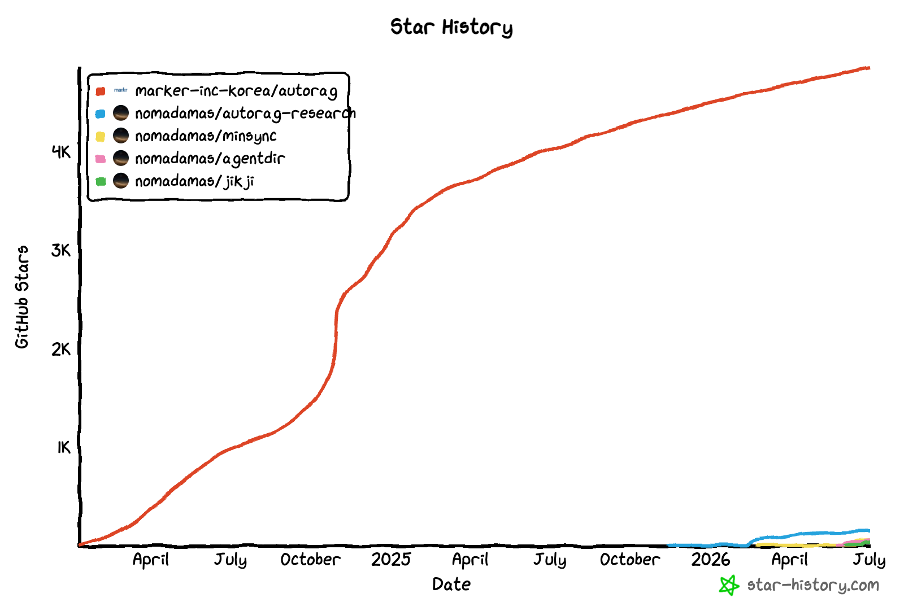
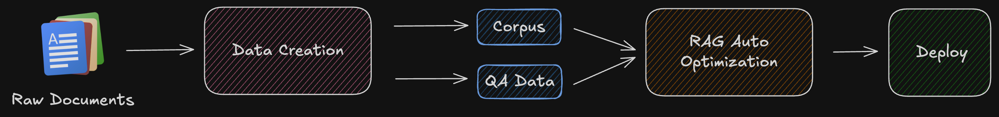
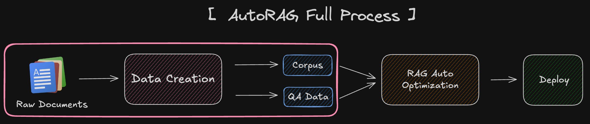
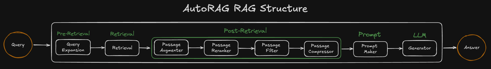
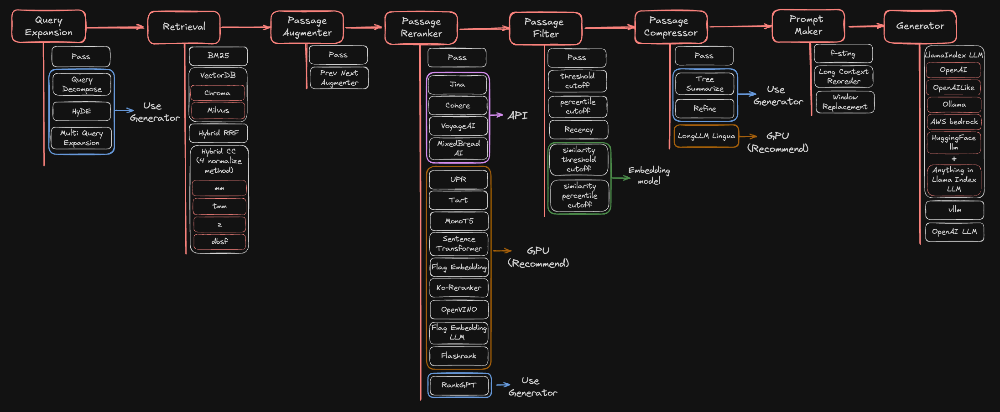
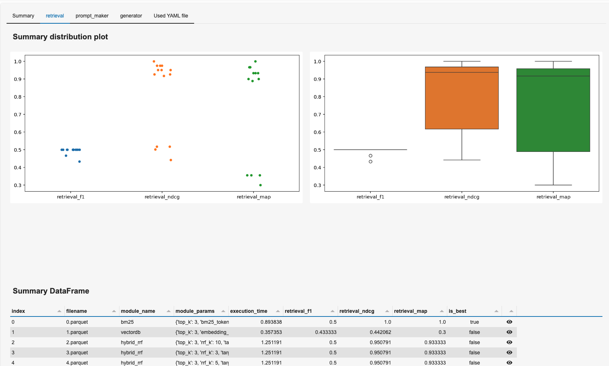
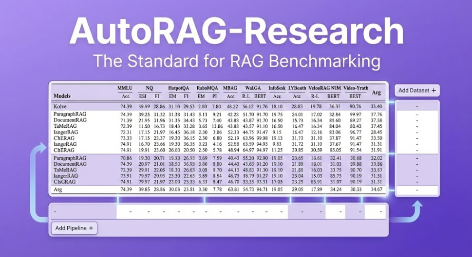
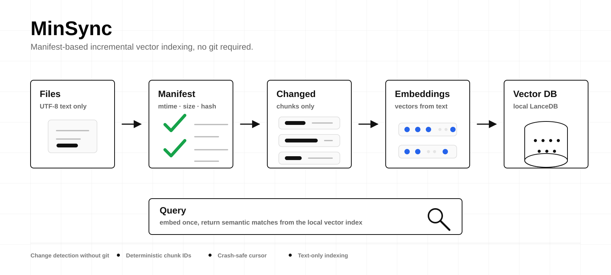

How a RAG auto-optimization tool with 4.8K stars became a mission to build the
knowledge-base layer & the all-purpose librarian search agent that AI agents are missing.
I created AutoRAG and work out of NomaDamas, an AI hacker house in Seoul. I spend my time on one question:
"Which retrieval pipeline is actually best — for this data, this use case?"

RAG frameworks? Dozens. Evaluation frameworks? Plenty. Yet everyone kept asking the same unanswered question:
"There are many RAG pipelines & modules out there — but you don't know which one is best for your own data and use case. Building and evaluating all of them is painfully slow."
The missing idea wasn't another pipeline. It was the concept from a neighboring field:

Give AutoRAG your QA + corpus data → it evaluates many RAG module combinations automatically → returns the best pipeline for your use case, ready to deploy.
So AutoRAG ships a full data-creation pipeline: parse → chunk → QA generation — turn raw PDFs/docs into an evaluation dataset.

AutoRAG models the pipeline as ordered node lines. Each node has swappable modules; the framework greedily searches for the best module + params at every stage.

Query → Pre-Retrieval → Retrieval → Post-Retrieval → Prompt → LLM → Answer. Every box is a decision point AutoRAG optimizes.

Configure the space in one YAML. AutoRAG runs the trials, evaluates with retrieval + generation metrics (F1, Recall, nDCG, MRR, METEOR, ROUGE, SemScore…), and emits a summary.csv with the winning pipeline.

Agentic RAG arrived. AutoRAG's fixed node structure couldn't express the wild variety of new pipelines.
Every benchmark has a different format. Building & embedding evaluation data is slow, repetitive, error-prone.
Every paper claims SOTA. Re-implementing each one to compare fairly is a research project by itself.
A tool that optimizes one pipeline shape can't answer "which pipeline shape is even right?"

One framework that unifies datasets, SOTA pipelines, and metrics — so you can benchmark your idea against the real state of the art with one command.
BEIR · MTEB · RAGBench · MrTyDi · BRIGHT · ViDoRe v1–v3 · VisRAG · Open-RAGBench. Text and image. Download & go.
DPR · BM25 · HyDE · Query Rewrite · Hybrid RRF/CC · BasicRAG · IRCoT · ET2RAG · VisRAG · MAIN-RAG — ready to run.
Recall · Precision · F1 · nDCG · MRR · MAP · BLEU · METEOR · ROUGE · BERTScore · SemScore.
Claude Code. Codex. Autonomous coding & knowledge agents everywhere.
So we asked ourselves the only question that mattered:
In this era, what should AutoRAG become?
Agents are brilliant at reasoning and tool use — but the layer that organically integrates & manages RAG and many data sources, and retrieves information from everywhere (including your local files), is still missing.
AutoRAG 2.0 fills that gap — built with NIPA open-source program support.
An agent-native knowledge-base layer — the middle layer that lets an agent use your documents at 200%.
You bring a static eval set. AutoRAG finds one "best" pipeline. Great — until the data, users, and questions drift.
Operation logs → the system re-evaluates representative workflows, adapts retrieval to your corpus, your queries, your feedback. Optimization becomes personalization.

Git-free change detection via mtime/size/hash. Re-embed only changed chunks, sweep stale ones — Storage layer stays fresh with near-zero cost.
Present the same originals in a purpose-built, read-only layout. CoW/reflink — no data copy. Give agents a better working tree without moving files.
HippoCamp benchmark · 551 local file-search cases · raw Hermes agent vs. the same agent with jikji find.
Metadata + file maps + parser caches + graph routes → one ranked candidate slate. The agent judges once instead of crawling.
One agent that manages many data sources, digs everywhere for information — local files included — and keeps itself current through memory-based personalization.
Thank you. Let's build the knowledge layer agents deserve.